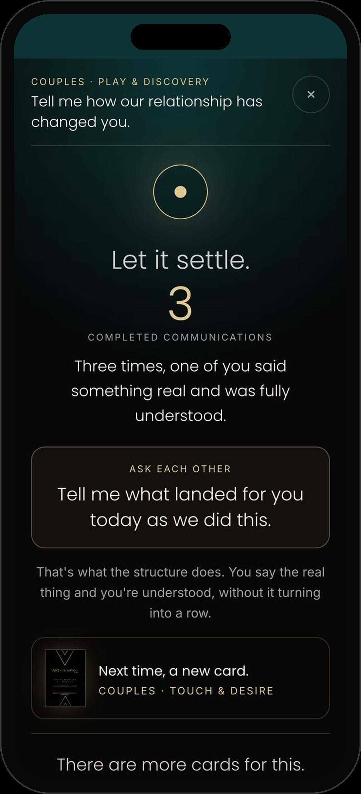
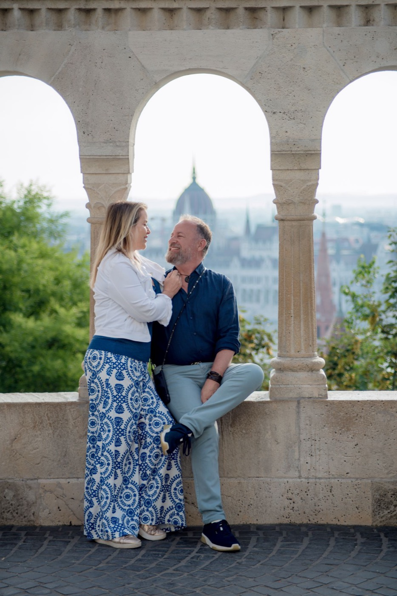
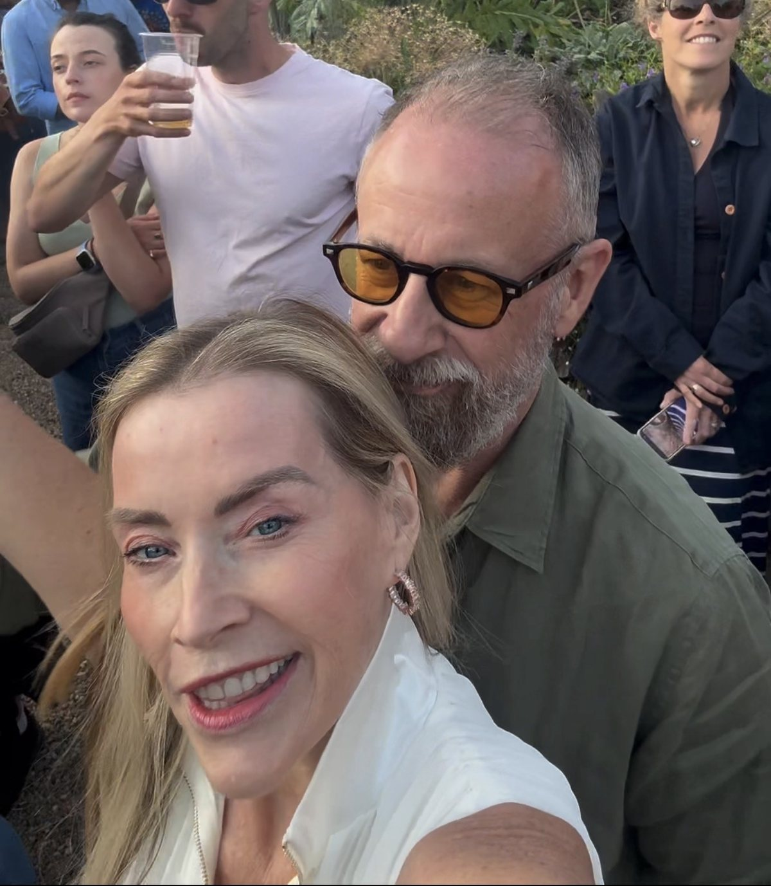

What this is
You already have the structure.
Trust & Repair gives you fifty prompts for the conversations that need a more careful place to land.
- A hurt that hasn't quite gone away.
- Something that happened between you that still gets brought into other conversations.
- Distance neither of you quite knows how to talk about.
- Something one of you is carrying that the other hasn't fully understood.
- Or a place where you know you want to come back towards each other, but don't know where to begin.
The structure doesn't change.
What changes is what you're bringing into it.
These prompts aren't there to make you agree about what happened.
They're not there to decide who was right.
And they're not there to force a resolution in fifteen minutes.
They're there to give you one place to start.
One prompt. One clear communication at a time.
The five territories
The fifty prompts sit across five territories. Ten prompts in each.
They aren't stages, and you don't need to work through them in order.
Choose the territory that feels closest to what is happening between you, or let the app draw for you.
Ten prompts in each territory. Fifty altogether.
They shuffle, so you can draw rather than work through them one by one.
When you already know where the conversation needs to begin, choose the territory.

Your fifty prompts are in the app
Your fifty Trust & Repair prompts live in the app, alongside your fifteen-minute timer.
Open Trust & RepairTap once and it's yours on this phoneTap the link once and it's yours on that phone. Add it to your home screen and you can come straight back whenever you want to use it.
Choose the territory you want to explore, or let the app draw a prompt for you.
One prompt. Fifteen minutes. That's all you need.

Before you use these
These prompts can ask more of both of you than the ones you've already practised with.
So choose your moment.
- Don't start one when you're already in the middle of the row.
- Don't use a card to prove a point, get an admission or make your partner understand your side.
Come to it when you're both willing to give the structure fifteen minutes. A morning. An afternoon. A weekend.
It may well not be at the end of a long day when one or both of you are already exhausted.
Then: one prompt. One sitting. Then stop.
When something important opens, the instinct can be to keep going.
Now we're finally talking about it.
Let's finish this.
There's one more thing I need you to understand.
You don't have to.
When the timer goes, finish the communication you're in and reach Thank You. Then stop.
Fifteen minutes does not have to resolve the whole thing. Something can remain unfinished. You can come back another day.
The purpose of the container is to give the conversation edges, not to push everything through them at once.

How to run it
You already know the structure.
- 1Choose the 15-minute timer in the app
- 2Choose your territory and draw one prompt
- 3One of you asks it
The other takes a breath, lets it land, and gives one clear communication.
- 4The listener responds with one of the three answers
When you reach Thank You, swap. Same prompt. Other person.
Keep going back and forth with the same prompt until the timer goes.
- Don't ride on each other's communication.
- Don't answer what they just said when your turn comes.
- Don't use your turn to correct their version of what happened.
Take the prompt fresh and give your own communication.
No fixing. No defending. No interrupting. No debating.
Understanding is the aim. Agreement isn't required.
And with these prompts, you may hear something you don't agree with at all.
You don't have to agree in order to understand what the other person is communicating.
When the timer goes, finish the communication you're in, reach Thank You, and stop.
You don't have to resolve it today.
If you lose the structure
These prompts can bring you closer to things that still have some charge.
If you lose the structure, come back to the structure.
One of you starts defending, explaining or debating.+
Pause. Don't get into another conversation about who just broke the rules. Simply say:
"We've left the three answers. Let's come back."
Then return to the prompt.
One of you gets emotional.+
Take a moment. Tears don't automatically mean you need to stop. They don't mean you have to keep going either.
The person speaking gets to decide whether they want to continue, pause or stop.
You don't need to immediately comfort, reassure or make the feeling go away.
But equally, the structure never overrides someone's wish to stop.
It turns into a row.+
Stop the timer. Don't try to finish the fifteen minutes just because you started them.
Leave the prompt there. Come back another day.
You might choose a different territory next time, or come back to the same one when you're both ready.
Something opens that feels bigger than fifteen minutes.+
Stop cleanly.
You do not have to finish the conversation today. You do not have to get to the bottom of it.
You do not have to use this practice for something that needs more support than the two of you can give it in that moment.
This is a communication practice. It isn't therapy.
Knowing when you've reached the edge of what this container can hold matters more than pushing past it.